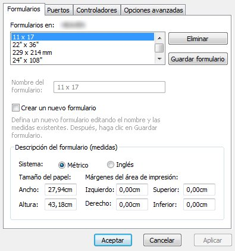
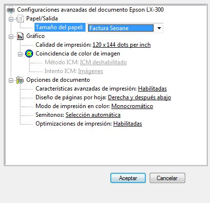

Ayuda Facturación Seoane
Configuración de tamaño de página
Pasos a seguir par aconfigurar el tamaño de hoja personalizado para las facturas:
- Acceder al panel de control, y dentro de este a el menú de Impresoras y faxes.
- Windows Vista: Hacer click derecho sobre un rincon vacío de la pantalla. Acceder al menú Ejecutar como administrador y dentro de este a Propiedades de servidor...
- Windows XP: Hacer click en Archivo y dentro de este en Propiedades de servidor...
- Aparecerá un menú como el siguiente:

- Hacer click sobre el cuadro de Crear nuevo formulario
- Introducir las medidas adecuadas al tamaño del papel de la factura, y darle un nombre a el nuevo formulario (por ejempo "Factura Seoane").
- Click sobre Guardar formulario
- Aceptar
Una vez realizados los pasos anteriores, en el menú de configuración de la impresora (Dentro del menú de Imprimir, en Preferencias -> Papel/Calidad -> Avanzadas...), estará disponible el nuevo tamaño de papel.
